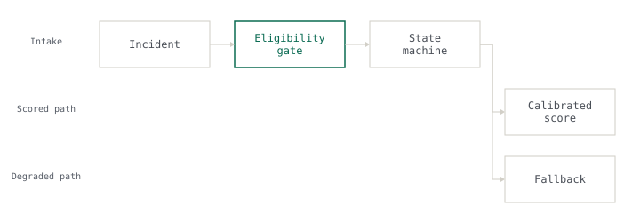

2026 · Team of 5 · sole owner of the subsystem · 438 of 1,031 tests
Crisis decision support
Crisis decision-support platform
Under saturation the server refuses work instead of queueing it, and the caller drops to a deterministic fallback.
438/1031 Tests written

Problem
A single-process model server under saturation has two options: queue everything and fall over, or refuse work and stay predictable. The first option was the one already in place.
My role
The context line above is the honest split: where it says a team size, the system was a team effort and only the named subsystem was mine.
Approach
The constraint
The callers are incident responders. An answer that arrives after the decision has been made is not a late answer, it is no answer — so tail latency, not throughput, is the number that matters.
What was rejected
Completeness against latency under load. Refusing work means some requests get a deterministic fallback instead of a model result, and that fallback is measurably worse.
What I built
I built for refusal: a semaphore-bounded in-flight limiter that fast-fails on wait timeout so callers drop to a deterministic fallback, an admission controller with request-shedding semantics, and an eligibility gate that skips work whose declared scope does not intersect the incident at hand. Callers get a slightly worse answer immediately instead of a correct answer never. On narrow cases the eligibility gate cut invocations sharply.
Results
Every number above is measured. None is estimated.
Stack
Links
- Source not public — built inside a client engagement. The architecture above is described without client detail.
What I learned
Under saturation the server refuses work instead of queueing it, and the caller drops to a deterministic fallback.